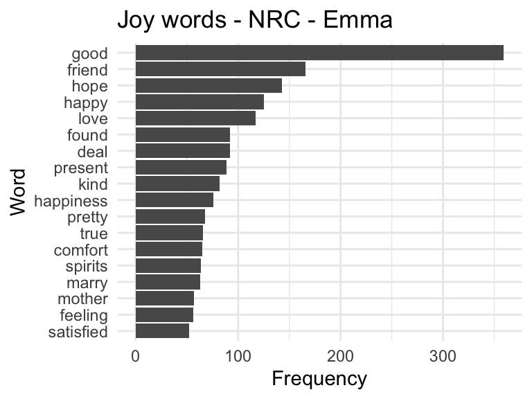
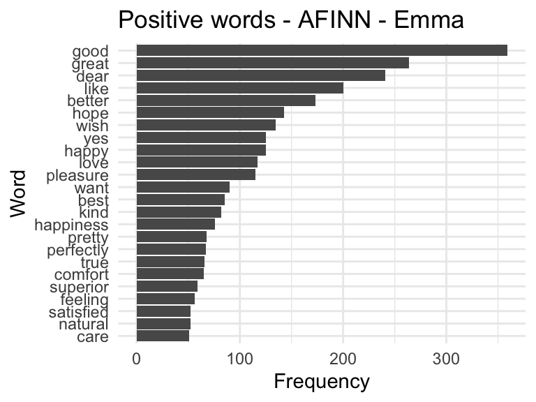
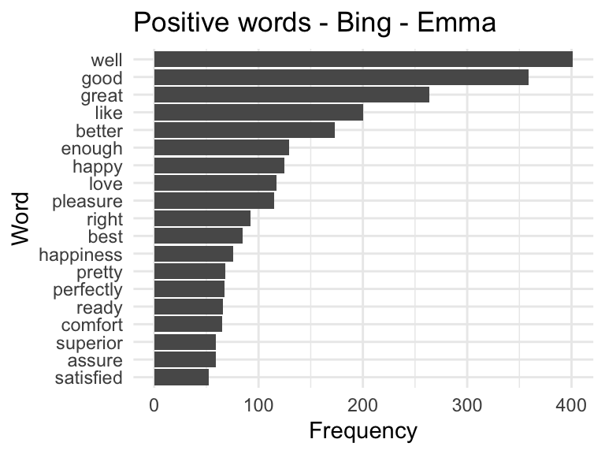

Title: Exploring Joyful Language in Jane Austen’s Emma using Tidytext
Instructions
Complete the following exercises using the appropriate packages in R. Ensure that your solutions are optimized and use functional programming principles where applicable.
Load the necessary libraries.
Answer each question in separate R code chunks.
Provide detailed explanations for your approach.
Submit the rendered HTML file.
Objective:
Use the tidytext package and three different sentiment lexicons (nrc, afinn, bing) to explore positive/joyful words in Emma by Jane Austen. You will tokenize the text, apply sentiment filters, visualize frequent sentiment words using ggplot2, and create a word cloud.
Tasks:
Data Preparation
Load the austen_books() dataset from the janeaustenr package.
Group by book and detect chapter boundaries using regex.
Create linenumber and chapter columns.
library(janeaustenr)library(dplyr)
Attaching package: 'dplyr'
The following objects are masked from 'package:stats':
filter, lag
The following objects are masked from 'package:base':
intersect, setdiff, setequal, union
── Conflicts ────────────────────────────────────────── tidyverse_conflicts() ──
✖ dplyr::filter() masks stats::filter()
✖ dplyr::lag() masks stats::lag()
ℹ Use the conflicted package (<http://conflicted.r-lib.org/>) to force all conflicts to become errors
library(tidyverse)library(wordcloud)
Loading required package: RColorBrewer
data <-austen_books()# use regex to detect chapters, add linenumber variabledata <- data %>%group_by(book) %>%mutate(chapter =cumsum(str_detect(text, regex("^chapter\\s+\\d+", ignore_case =TRUE))),linenumber =row_number() ) %>%ungroup()# separate data set that filters for only book = emma emma_data <-austen_books() %>%filter(book =="Emma") %>%group_by(book) %>%mutate(chapter =cumsum(str_detect(text, regex("^chapter\\s+\\d+", ignore_case =TRUE))),linenumber =row_number() ) %>%ungroup() %>%unnest_tokens(word, text)head(data, 20)
# A tibble: 20 × 4
text book chapter linenumber
<chr> <fct> <int> <int>
1 "SENSE AND SENSIBILITY" Sens… 0 1
2 "" Sens… 0 2
3 "by Jane Austen" Sens… 0 3
4 "" Sens… 0 4
5 "(1811)" Sens… 0 5
6 "" Sens… 0 6
7 "" Sens… 0 7
8 "" Sens… 0 8
9 "" Sens… 0 9
10 "CHAPTER 1" Sens… 1 10
11 "" Sens… 1 11
12 "" Sens… 1 12
13 "The family of Dashwood had long been settled in Su… Sens… 1 13
14 "was large, and their residence was at Norland Park… Sens… 1 14
15 "their property, where, for many generations, they … Sens… 1 15
16 "respectable a manner as to engage the general good… Sens… 1 16
17 "surrounding acquaintance. The late owner of this … Sens… 1 17
18 "man, who lived to a very advanced age, and who for… Sens… 1 18
19 "life, had a constant companion and housekeeper in … Sens… 1 19
20 "death, which happened ten years before his own, pr… Sens… 1 20
Tokenization
Use unnest_tokens() to tokenize text into individual words.
tokenized <- data %>%unnest_tokens(word, text)head(tokenized, 20)
# A tibble: 20 × 4
book chapter linenumber word
<fct> <int> <int> <chr>
1 Sense & Sensibility 0 1 sense
2 Sense & Sensibility 0 1 and
3 Sense & Sensibility 0 1 sensibility
4 Sense & Sensibility 0 3 by
5 Sense & Sensibility 0 3 jane
6 Sense & Sensibility 0 3 austen
7 Sense & Sensibility 0 5 1811
8 Sense & Sensibility 1 10 chapter
9 Sense & Sensibility 1 10 1
10 Sense & Sensibility 1 13 the
11 Sense & Sensibility 1 13 family
12 Sense & Sensibility 1 13 of
13 Sense & Sensibility 1 13 dashwood
14 Sense & Sensibility 1 13 had
15 Sense & Sensibility 1 13 long
16 Sense & Sensibility 1 13 been
17 Sense & Sensibility 1 13 settled
18 Sense & Sensibility 1 13 in
19 Sense & Sensibility 1 13 sussex
20 Sense & Sensibility 1 13 their
Sentiment Analysis
Filter joy/positive words from each of the three sentiment lexicons:
nrc (joy)
afinn (positive scores ≥ 1)
bing (positive)
Join each with Emma’s text and:
Count word frequency.
Filter for frequently occurring words (n > 50).
Visualize using a bar chart (ggplot2) and a word cloud (wordcloud).
# filter sentiment lexicons using assignment criterianrc <-get_sentiments("nrc") %>%filter(sentiment =="joy")afinn <-get_sentiments("afinn") %>%filter(value >=1)bing <-get_sentiments("bing") %>%filter(sentiment =="positive")# function to count the frequency of each word in the lexiconscount_freq <-function(data, lexicon) { data %>%inner_join(lexicon, by ="word") %>%count(word, sort =TRUE) %>%filter(n >50)}# run function on emma_data for each lexiconemma_nrc <-count_freq(emma_data, nrc)emma_afinn <-count_freq(emma_data, afinn)emma_bing <-count_freq(emma_data, bing)# function to plot frequencyemma_plot_bar <-function(df, title) {ggplot(df, aes(x =reorder(word, n), y = n)) +geom_col() +coord_flip() +labs(title = title, x ="Word", y ="Frequency") +theme_minimal()}# run plot function for each lexiconemma_plot_bar(emma_nrc, "Joy words - NRC - Emma")

emma_plot_bar(emma_afinn, "Positive words - AFINN - Emma")

emma_plot_bar(emma_bing, "Positive words - Bing - Emma")

# creat word clouds using wordcloud() functionwordcloud(words = emma_nrc$word, freq = emma_nrc$n,scale =c(4, 0.5), max.words =100)